About Me
I am a postdoctoral researcher at the Department of Information Technology, Alpen-Adria-Universität, Klagenfurt, Austria. Before joining the team, I was an Assistant Professor at the Azad University of Mashhad, Iran. I received my Ph.D. in Computer Engineering from the Department of Computer Engineering, Ferdowsi University of Mashhad, Iran.
Research InterestsData Streaming Systems, Video Streaming, Contact InformationEmail: farzad(dot)tashtarian(at)aau(dot)at, |
 |
News
★ Proceeding Chair, ACM Multimedia Systems conference 2024 (MMSys'24).
★ Congrats Emanuele Artioli, our paper "DIGITWISE: Digital Twin-based Modeling of Adaptive Video Streaming Engagement ",
has been accepted by the 15th ACM Multimedia Systems Conference, 15-18 April, 2024, Bari, Italy.
★ Our paper "E-WISH: An Energy-aware ABR Algorithm For Green HTTP Adaptive Video Streaming",
has been accepted by the International Conference on Mile-Highe Video, Marriott DTC, Denver on Feb. 11-14, 2024.
★ Proceeding Chair "Mile-High Video 2024 (MHV'24)",
★ Our paper "Empowerment of Atypical Viewers via Low-Effort Personalized Modeling of Video Streaming Quality",
has been accepted by the 19th International Conference on emerging Networking EXperiments and Technologies (CoNEXT), Paris, France, December 5-8, 2023.
★ Our paper "ARTEMIS: Adaptive Bitrate Ladder Optimization for Live Video Streaming",
has been accepted by 21st USENIX Symposium on Networked Systems Design and Implementation (NSDI '24 Spring).
★ Guest editor of the special issue on "Advancements in Network-Assisted Video Streaming: Optimization and Performance Analysis", IEEE Network Magazine
★ Our paper "On Optimizing the Charging Trajectory of Mobile Chargers in Wireless Sensor Networks: A Deep Reinforcement Learning Approach" ,
has been accepted by Wireless Networks Springer journal, 2023.
★ Our paper "Performance Analysis of H2BR: HTTP/2-based Segment Upgrading to Improve the QoE in HAS" ,
has been accepted by Multimedia Tools and Applications journal, 2023.
★ I gave the initial talk of my habilitation at Klagenfurt University:"How to Optimize Dynamic Adaptive Video Streaming? Challenges and Solutions"
★ Our paper "Which CDN to Download From? A Client and Server Strategies " ,
has been accepted by Mile-High Video (MHV), 8-10 May, Denver, USA, 2023.
★ Our paper "LALISA: Adaptive Bitrate Ladder Optimization in HTTP-based Adaptive Live Streaming " ,
has been accepted by IEEE/IFIP Network Operations and Management Symposium (NOMS).
★ Our paper "CD-LwTE: Cost- and Delay-aware Light-weight Transcoding at the Edge" ,
has been accepted by IEEE Transactions on Network and Service Management, 2022.
★ Our paper "OTEC: An Optimized Transcoding Task Scheduler for Cloud and Fog Environments" ,
has been accepted by ACM CoNEXT - ViSNext Workshop 2022.
★ Our paper "MCOM-Live: A Multi-Codec Optimization Model at the Edge for Live Streaming " ,
has been accepted by IEEE MMM Conference, 2022.
★ Our paper "DoFP+: An HTTP/3-based Adaptive Bitrate Approach Using Retransmission Techniques" ,
has been accepted by IEEE ACCESS Journal, 2022.
★ I am pleased to announce that our workshop proposal titled "2nd ACM CoNEXT Workshop on Design, Deployment, and Evaluation of Network-assisted Video Streaming (ViSNext'22)",
has been accepted by the 18th International Conference on emerging Networking EXperiments and Technologies, Rome, Italy, 2022.
Professional Exprience
Postdoctoral Researcher [July 2020- Present],
ATHENA Project,
Department of Information Technology (ITEC,)
Alpen-Adria-Universität Klagenfurt, Austria.
Assistant Professor [November 2014- Present],
Lecturer [2009-2014],
Department of Computer Engineering, Islamic Azad University, Mashhad, Iran.
Visiting Scholar [February to October 2013],
Department of Electrical and Computer Engineering,
University of Missouri - Kansas City, Kansas City, Missouri, USA.
IP-PBX Type Approval Laboratory, Technical Specialist [2010-2014],
Lecturer [2009-2010],
Department of Computer Engineering, Ferdowsi University of Mashhad, Mashhad, Iran.
Publications- Selected Journal Papers
-
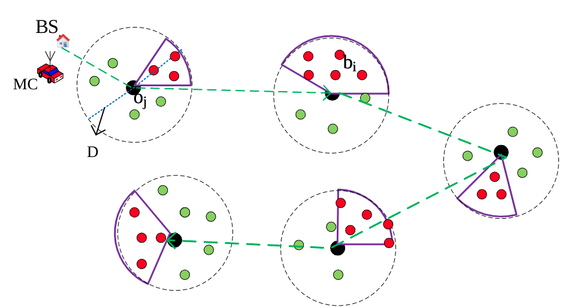 On Optimizing the Charging Trajectory of Mobile Chargers in Wireless Sensor Networks: A Deep Reinforcement Learning Approach,
Nowrozian, N.,Tashtarian, F., Forghani, Y.
Wireless Networks, Springer (2023).
[paper]
Performance Analysis of H2BR: HTTP/2-based Segment Upgrading to Improve the QoE in HAS,
Nguyen, M., Amirpour, H., Tashtarian, F., Timmerer. C., Hellwagner, H.
Multimedia Tools and Applications, Springer journal(2023).
[paper]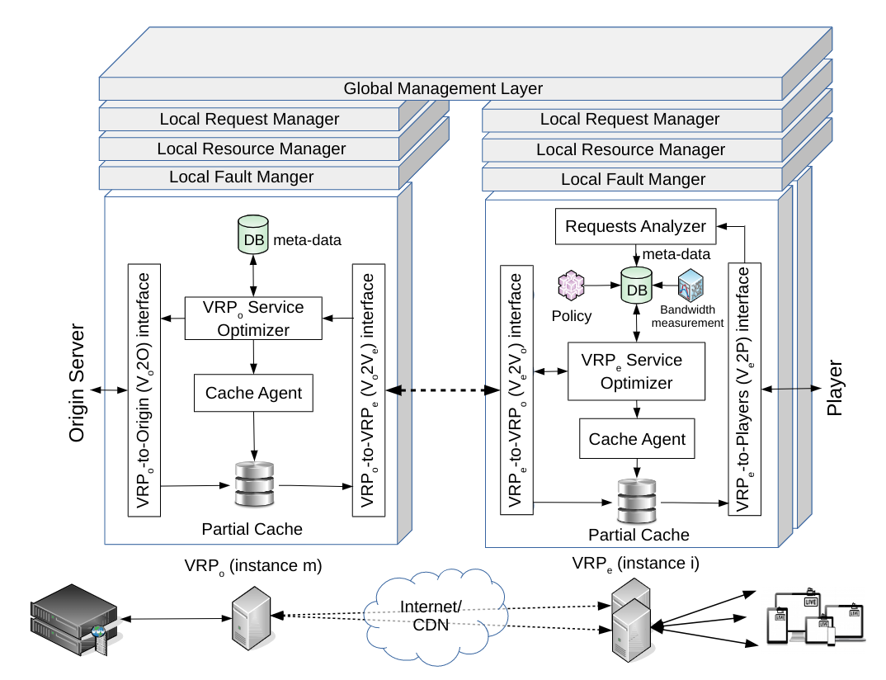 HxL3: Optimized Delivery Architecture for HTTP Low-Latency Live Streaming,
Tashtarian, F., Bentaleb, A., Erfanian, A., Hellwagner, H., Timmerer, C., Zimmermann, R.
IEEE Transaction on Multimedia (2022).
[paper]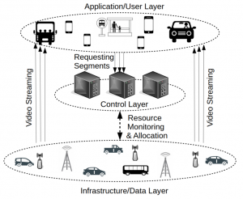 QoCoVi: QoE- and Cost-Aware Adaptive Video Streaming for the Internet of Vehicles,
Erfanian, A.,Tashtarian, F., Timmerer, C., Hellwagner, H.
Elsevier Computer Communication (2022).
[paper]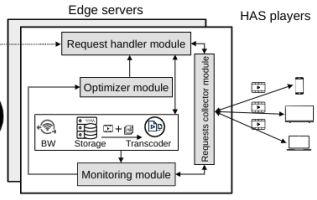 CD-LwTE: Cost- and Delay-aware Light-weight Transcoding at the Edge,
Erfanian, A., Amirpor, H., Tashtarian, F., Timmerer, C., Hellwagner, H.,
IEEE Transactions on Network and Service Management (2022).
[paper]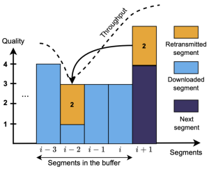 DoFP+: An HTTP/3-based Adaptive Bitrate Approach Using Retransmission Techniques,
Nguyen, M., Lorenzi, D., Tashtarian, F., Hellwagner, H., Timmerer, C.,
IEEE Access (2022).
[paper]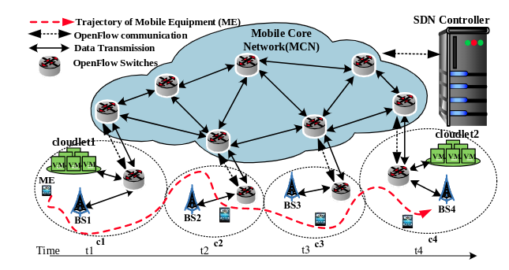 CoPaM: Cost-aware VM Placement and Migration for Mobile services in Multi-Cloudlet environment: An SDN-based approach,
Shahryari, S.,Tashtarian, F., Hosseini-Senoc, S.
Elsevier Computer Communication (2022).
[paper]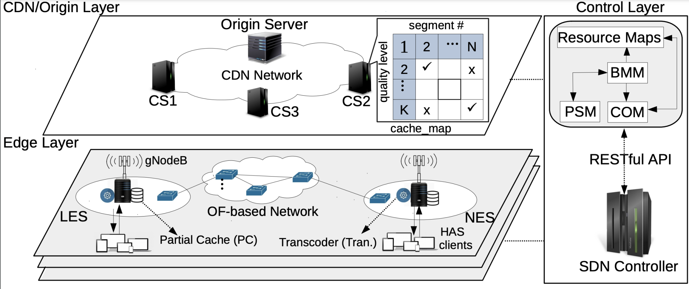 ARARAT: A Collaborative Edge-Assisted Framework for HTTP Adaptive Video Streaming,
Farahani, R., Shojafar, M., Timmerer, C., Tashtarian, F., Ghanbari,M., Hellwagner, H.
IEEE Transactions on Network and Service Management (2022).
[paper]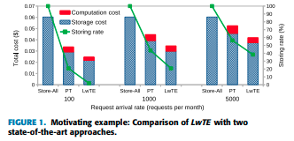 LwTE: Light-weight Transcoding at the Edge,
Erfanian, A., Amirpour, H., Tashtarian, F., Timmerer, C., Hellwagner, H.,
IEEE Access (2021).
[paper]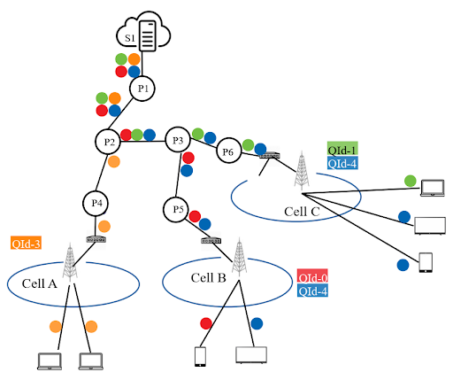 OSCAR: On Optimizing Resource Utilization in Real-time Video Streaming,
Erfanian, A., Tashtarian, F., Zabrovskiy, A.,Timmerer, C., Hellwagner, H.,
IEEE Transaction on Network and Service Management (2020).
[paper]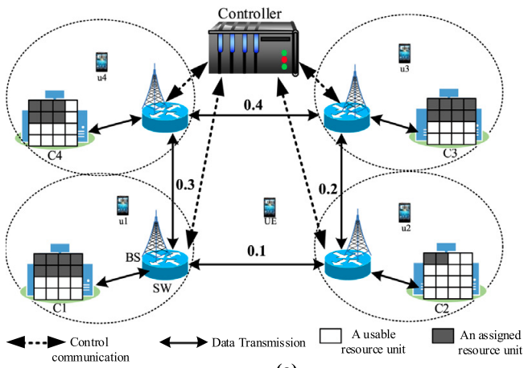 An SDN-based Framework for Maximizing Throughput and Balanced Load Distribution in A Cloudlet Network
Shahryari, S., Hosseini Seno, S.A, Tashtarian, F.,
The Future Generation Computer Systems (2020).
[paper]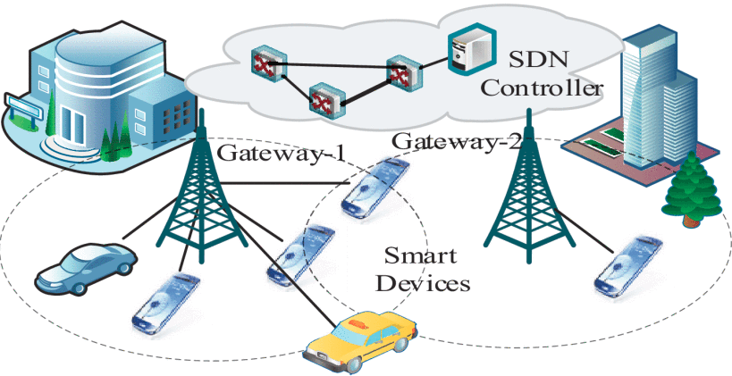 Load-Balancing Algorithm for Multiple Gateways in Fog-based Internet of Things,
Banaie, F., Yaghmae, M.H., Hosseini Seno S.A., Tashtarian, F.,
IEEE Internet of Things Journal (2020).
[paper]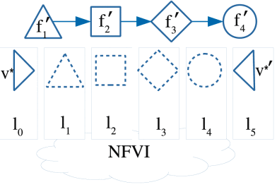 CoDeC: A Cost-Effective and Delay-Aware SFC Deployment,
Tashtarian, F., Faten Zhani, M., Fatemipour, B., Yazdani, B.,
IEEE Transactions on Network and Service Management (2019).
[paper]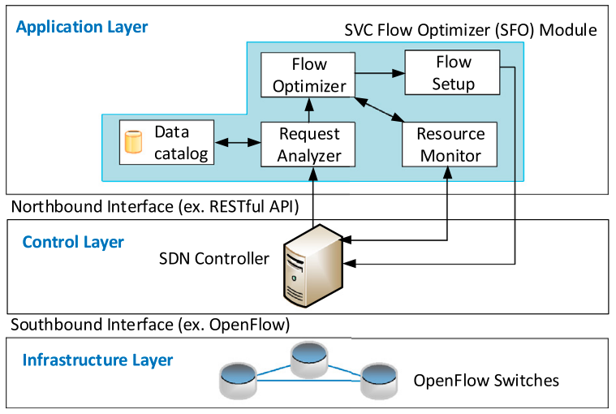 S2VC: An SDN-based Framework for Maximizing QoE in SVC-Based HTTP Adaptive Streaming,
Tashtarian, F., Erfanian. A, and Varasteh, A.,
Elsevier Computer Networks (2018).
[paper]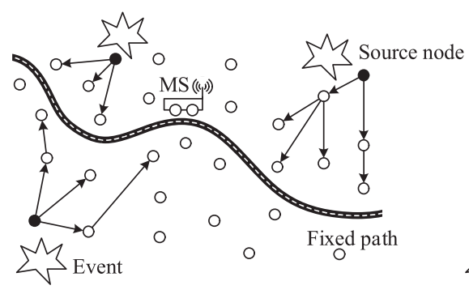 Multihop Data Gathering in wireless Sensor Networks with A Mobile Sink,
Tashtarian, F., Sohraby, K., and Varasteh, A.,
International Journal of Communication Systems (2017).
[paper]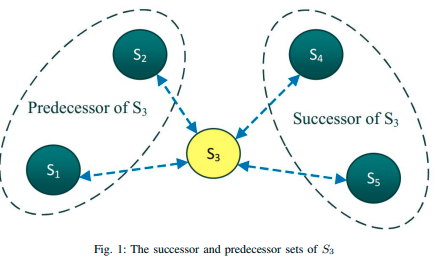 Distributed Lifetime Optimization in Wireless Sensor Networks using Alternating Direction Method of Multipliers,
Tashtarian, F., Montazerolghaem, A., and Varasteh, A.,
International Journal of Communication Systems (2017).
[paper]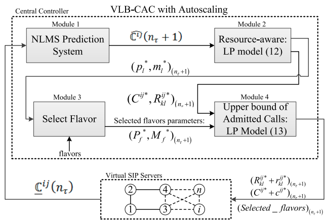 A Load-Balanced Call Admission Controller for IMS Cloud Computing,
Montazerolghaem, A., Moghaddam, M.H.Y., Leon-Garcia, A., Naghibzadeh, Tashtarian, F.,
IEEE Transactions on Network and Service Management, January (2016).
[paper]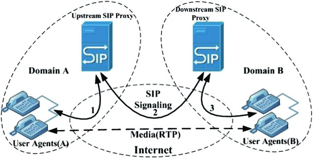 Overload Mitigation Mechanism for VoIP Networks: A Transport Layer Approach Based on Resource Management,
Montazerolghaem, A., Hosseini Seno, S. A., Moghaddam, M. H. Y., Tashtarian, F.,
Transactions on Emerging Telecommunications Technologies 27.6 (2016).
[paper]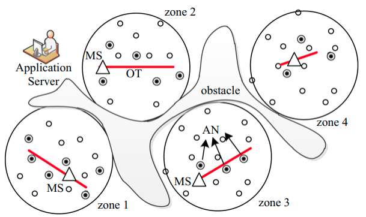 Controlling Mobile Sink Trajectory for Data Harvesting in WSNs,
Tashtarian, F., Majma, M.R. , Pedram, H., ; TakhtFooladi, M.D.,
Wireless Personal Communications 90.3 (2016).
[paper]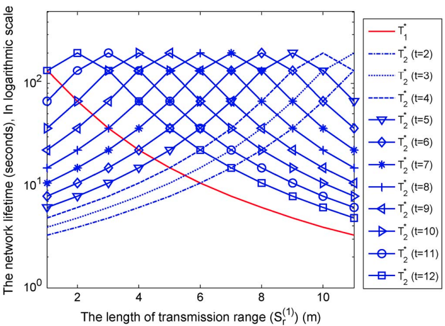 On Maximizing the Lifetime of Wireless Sensor Networks in Event-Driven Applications with Mobile Sinks,
Tashtarian, F., Moghaddam, M. H. Y., Sohraby, K., Effati, S.,
IEEE Transactions on Vehicular Technology 64.7 (2015).
[paper]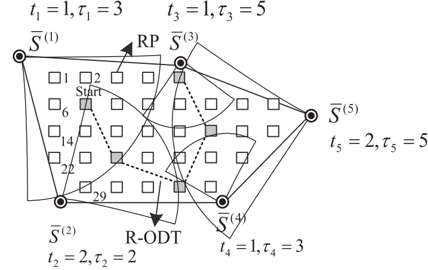 ODT: Optimal Deadline-based Trajectory for Mobile Sinks in WSN: A Decision Tree and Dynamic Programming Approach,
Tashtarian, F., Moghaddam, M.H.Y., Sohraby, K., Effati, S.,
Elsevier Computer Networks 77 (2015).
[paper]
Publications, Selected Conference Papers
-
DIGITWISE: Digital Twin-based Modeling of Adaptive Video Streaming Engagement,
Artioli, E., Tashtarian, F., and Timmerer, C.
The 15th ACM Multimedia Systems Conference, Bari, Italy on April 15-18, 2024.E-WISH: An Energy-aware ABR Algorithm For Green HTTP Adaptive Video Streaming,
Lorenzi, D., Nguyen, M., Tashtarian, F., and Timmerer, C.
The International Conference on Mile-Highe Video, Marriott DTC, Denver on Feb. 11-14, 2024.Empowerment of Atypical Viewers via Low-Effort Personalized Modeling of Video Streaming Quality,
Peroni, L., Gorinsky, S., Tashtarian, F., and Timmerer, C.
The 19th International Conference on emerging Networking EXperiments and Technologies (CoNEXT), Paris, France, December 5-8, 2023.Community-Based QoE Enhancement for User-Generated Content Live Streaming,
Saeedinia, R.,Fatemi, S.O., Lorenzi D.,Tashtarian, F., and Timmerer, C.
13th International Conference on Computer and Knowledge Engineering (ICCKE), Mashad, Iran, November 1-2, 2023.ARTEMIS: Adaptive Bitrate Ladder Optimization for Live Video Streaming,
Tashtarian, F., Bentaleb, A., Amirpour, H., Gorinsky, S., Jiang, J., Hellwagner, H., and Timmerer, C.
The 21st USENIX Symposium on Networked Systems Design and Implementation (NSDI), APRIL 16–18, SANTA CLARA, CA, USA, 2024.LALISA: Adaptive Bitrate Ladder Optimization in HTTP-based Adaptive Live Streaming,
Tashtarian, F., Bentaleb, A., Amirpour, H., Taraghi, B, Timmerer, C., Hellwagner, H., and Zimmermann, R.
The 36th IEEE/IFIP Network Operations and Management Symposium (NOMS), 8-12 May- Miami, FL, USA, 2023.MCOM-Live: A Multi-Codec Optimization Model at the Edge for Live Streaming,
Lorenzi, D., Tashtarian, F., Amirpour, H., Timmerer, C., Hellwagner, H.
The 29th International Conference on MultiMedia Modeling (MMM) 9 – 12 January, Bergen, Norway, 2023.Which CDN to Download From? A Client and Server Strategies,
Bentaleb, A., Farahani, R., Tashtarian, F., Timmerer, C., Hellwagner, H., and Zimmermann, R.
Mile-High Video (MHV), 8-10 May- Denver, USA, 2023.OTEC: an optimized transcoding task scheduler for cloud and fog environments,
Afzal, S., Tashtarian, F., Hadian, H., Erfanian, A., Timmerer, C., Prodan, R.
The second International Workshop on Design, Deployment, and Evaluation of Network-Assisted Video Streaming (ViSNext), 6-9 December, Rome, Italy, 2022.Low Latency Live Streaming in DASH and HLS,
Bentaleb, A., Zhan, Z., Tashtarian, F., Lim, M., Harous, S., Timmerer, C., Hellwagner, H., and Zimmermann, R.
The 30th ACM International Conference on Multimedia (MM), Lisbon, Portugal, 2022.LEADER: A Collaborative Edge- and SDN-Assisted Framework for HTTP Adaptive Video Streaming,
Farahani, R., Tashtarian, F., Timmerer, C., Ghanbari, M., Hellwagner, H.
IEEE International Conference on Communications (ICC) May 16–20, Seoul, South Korea, 2022.Video streaming using light-weight transcoding and in-network intelligence ,
Erfanian, R., Amirpour H., Tashtarian, F., Timmerer, C, Hellwagner, H.
Mile High Video (MHV), 2022.RICHTER: Hybrid P2P-CDN Architecture for Low Latency Live Video Streaming,
Farahani, R., Amirpour, H., Tashtarian, F., Bentaleb, A., Timmerer, C., Hellwagner, H., Zimmermann, R.
Mile High Video (MHV), 2022.Quality Optimization of Live Streaming Services over HTTP with Reinforcement Learning,
Tashtarian, F., Falanji, R., Bentaleb, A., Erfanian, A., Mashhadi, PS., Timmerer, C., Hellwagner, H., Zimmermann, R.
IEEE Global Communications Conference (GLOBECOM), Madrid, Spain, 2021.LwTE-Live: Light-weight Transcoding at the Edge for Live Streaming,
Erfanian, A., Amirpour, H., Tashtarian, F., Timmerer, C., Hellwagner, H.,
The first ACM CoNEXT Workshop on Design, Deployment, and Evaluation of Network-assisted Video Streaming (ViSNext ), Munich, Germany, 2021. -
Days of Future Past: An Optimization-based Adaptive Bitrate Algorithm over HTTP/3,
Lorenzi, D., Nguyen, M., Tashtarian, F., Timmerer, C., Hellwagner, H., Milani, S.,
The third ACM CoNEXT Workshop on the Evolution, Performance, and Interoperability of QUIC (EPIQ), Munich, Germany, 2021. -
A Distributed Delivery Architecture for User Generated Content Live Streaming over HTTP,
Tashtarian, F., Bentaleb, A., Farahani, R., Nguyen, M., Timmerer, C. Hellwagner, H., Zimmermann, R.
The 46th IEEE Conference on Local Computer Networks (LCN) Oct. 4-7, Edmonton, Canada, 2021. -
CSDN: CDN-Aware QoE Optimization in SDN-Assisted HTTP Adaptive Video Streaming,
Farahani, R., Tashtarian, F., Amirpour, H., Timmerer, C., Ghanbari, M., Hellwagner, H.,
The 46th IEEE Conference on Local Computer Networks (LCN) Oct. 4-7, Edmonton, Canada, 2021. -
ES-HAS: An Edge- and SDN-Assisted Framework for HTTPAdaptive Video Streaming,
Farahani, R., Tashtarian, F., Erfanian, A., Timmerer, C., Ghanbari, M., Hellwagner, H.,
The 31st Workshop on the network and operating systems support for digital audio and video (ACM NOSSDAV), 2021. -
On Optimizing Resource Utilization in AVC-based Real-time Video Streaming,
Erfanian, A., Tashtarian, F., Farahani, R., Timmerer, C., Hellwagner, H.,
The 6th IEEE International Conference on Network Softwarization (IEEE NetSoft), 2020. -
On Maximizing QoE in AVC-Based HTTP Adaptive Streaming: An SDN Approach,
Erfanian, A, Tashtarian, F., Moghaddam, M.H.Y,
The IEEE/ACM International Symposium on Quality of Service (IWQoS), Alberta, Canada, (2018). -
An Optimal Spatial and Temporal Charging Schedule for Electric Vehicles in Smart Grid,
Barabadi, B., Tashtarian, F., and Moghaddam, M.H.Y,
The IEEE Global Communications Conference (GLOBECOM), Dubai, 2018. -
Distributed Lifetime Optimization of Wireless Sensor Networks in Smart Grid,
Tashtarian, F., Montazerolghae, A., Nokar MA,
The IEEE International Conference on Smart Energy Grid Engineering (SEGE), Oshawa, Canada, 2018. -
Distributed VNF Scaling in Large-scale Datacenters: An ADMM-based Approach,
Tashtarin, F., Varasteh, A., Montazerolghae, A., & Kellerer. W,
The 17th IEEE International Conference on Communication Technology (ICCT), 27-30 October, Chengdu, China, 2017. -
On Reliability-Aware Server Consolidation in Cloud Datacenters,
Varasteh, A., Tashtarian, F., & Goudarzi, M.,
The 16th International Symposium on Parallel and Distributed Computing (ISPDC), 2017. -
Overload Control in SIP Networks: A Heuristic Approach Based on Mathematical Optimization,
Montazerolghaem, A., Moghaddam, M.H.Y, & Tashtarian, F.,
The IEEE GLOBECOM'15, 5-6 December, San Diego, USA, 2015. -
Energy-Efficient Data Gathering Algorithm in Hierarchical WSNs with Mobile Sink,
Tashtarian, F., Moghaddam, M.H.Y, & Effati, S.,
The 2nd IEEE International eConference on Computer and Knowledge Engineering (ICCKE), Mashhad, Iran, 2012. -
Maximizing the Lifetime of Daley-tolerant Wireless Sensor Networks Using Fuzzy System,
Porshokooh, V. R., Haghighat, A. T., & Tashtarian, F.,
The International Conference on Web Information Systems and Mining, Springer, September, Berlin, Heidelberg, 2011. -
EELLER: Energy Efficient-Low Latency Express Routing for WSNs,
Mohebi, A., Tashtarian, F., Moghaddam, M.H.Y , & Honary, M.T.,
The 2nd International Conference on Computer Engineering and Technology (ICCET), 16-18 April Chengdu, China, 2010. -
Optimal Location for Mobile Sink in Wireless Sensor Networks,
Khodashahi, M.H., Tashtarian, F., Moghaddam, M.H.Y, & Honary, M.T.,
The IEEE Wireless Communications and Networking Conference (WCNC), 19-21 April, Sydney, Australia, 2010. -
A New Level Based Clustering Scheme for Wireless Sensor Networks,
Tashtarian, F., Honary, M.T, Mazinani, M., Haghighat, A.T., & Chitizadeh, J.,
The IEEE/ACS International Conference on Computer Systems and Applications (AICCSA), March 31 – April 04, Doha, Qatar, 2008. -
An Energy-Efficient Data Reporting Scheme for Wireless Sensor Networks,
Tashtarian, F., Honary, M.T, Mazinani, M., Haghighat, A.T., Chitizadeh, J.,
The IEEE/ACS International Conference on Computer Systems and Applications (AICCSA), March 31 – April 04, Doha, Qatar, 2008. -
Optimal Distributed Algorithm for Minimum Connected Dominating Sets in WSNs,
Raei, H., Sarram, M., Adibniya, F., & Tashtarian, F.,
The 5th IEEE International Conference on Mobile Ad Hoc and Sensor Systems (MASS), September 29 – October 2, 2008 Atlanta, Georgia, 2008. -
Directional Rumor Routing in Wireless Sensor Networks,
Shokrzadeh, H., Haghighat, A. T., Tashtarian, F., & Nayebi, A.,
The 3rd IEEE/IFIP International Conference in Central Asia on Internet (ICI), 26-28 September, Tashkent, Uzbekistan, 2007. -
A Competitive Clustering Scheme for Prolonging the Lifetime of WSNs,
Honary, M. T., Chitizadeh, J., & Tashtarian, F.,
The 6th IEEE International Conference on Information, Communications and Signal Processing (ICICS), 10-13 December, Singapore, 2007. -
A New Energy-Efficient Level-based Clustering Algorithm for WSNs,
Tashtarian, F., Honary, M. T., Haghighat, A. T., & Chitizadeh, J.,
The 6th IEEE International Conference on Information, Communications and Signal Processing (ICICS 2007), 10-13 December, Singapore, 2007. -
A New Energy-Efficient Clustering Algorithm for Wireless Sensor Networks,
Tashtarian, F., Haghighat, A. T., Honary, M. T., & Shokrzadeh, H.,
The 15th IEEE International Conference on Software, Telecommunications and Computer Networks (SoftCOM), 27-29 September, Dubrovnik, Croatia, 2007.
Teaching Experience
(2024-Present), Undergraduate student course on "Operating Systems and Computer Networks", (Klagenfurt University).
(2022-Present), Graduate student course on "Fundamental Topics in Multimedia Systems", (Klagenfurt University)
(2014-2020), Graduate student course on "Advanced Computer Networks", (Azad University).
(2009-2020), Undergraduate student course on "Computer Networks", (Azad University).
(2015-2020), Undergraduate student course on "Multimedia Systems", (Azad University).
(2015-2018)
Undergraduate student course on "Internet Engineering", (Azad University).
(2009-2010), Undergraduate student course on "Data Communication", (Ferdowsi University).
Academic Services
★Proceeding Chair, ACM Multimedia Systems conference 2024 (MMSys'24).
★Area Chair, "ACM Multimedia (MM'24)".
★Proceeding Chair, "Mile-High Video 2024 (MHV'24)".
★Guest editor of the special issue on "Advancements in Network-Assisted Video Streaming: Optimization and Performance Analysis", IEEE Network Magazine
★The initial talk of my habilitation at Klagenfurt University:"How to Optimize Dynamic Adaptive Video Streaming? Challenges and Solutions"
★Talk on
—“Optimizing QoE in Live Streaming over Wireless Networks using Machine Learning Techniques", CHIST-ERA, Edinburgh, UK, May 25, 2022,
—“LwTE: Light-Weight Transcoding at the Edge", IMDEA Network Institute, Madrid, Spain (Dec. 9, 2021)
—“Network-Assisted Video Streaming” at the University of Isfahan, Isfahan, Iran (Oct. 20, 2021)
★Co-Chair of
—LIVES'24 Workshop - IEEE ICME'24 Conference
—ViSNext'22 Workshop - ACM CoNEXT'22 Conference
—ViSNext'21 Workshop - ACM CoNEXT'21 Conference
★Peer-reviewer
—ACM Transactions on Multimedia Computing, Communications, and Applications
—ACM Transactions on Internet Technology
—IEEE Transactions on Circuits and Systems for Video Technology
—IEEE Transactions on Network and Service Management
—IEEE Transactions on Parallel and Distributed Systems
—IEEE Transactions on Wireless Communications
—IEEE Transactions on Vehicular Technology
—IEEE Transactions on Internet of Things
—IEEE Transactions on Broadcasting
—IEEE Access
—Computer Network, Elsevier
★Senior IT Consultant, Iran Khodro Khorasan Company (IKKCO), April 2017- February 2020
★Member of Technical Program Committee
—INFOCOM2024
—MMSys2023, 2024
—GMSys2023, 2024
—ICCKE2022, 2023, 2024
—SOFTT2020, 2021
—ICTCK2014-18
—SCIOT2017-20